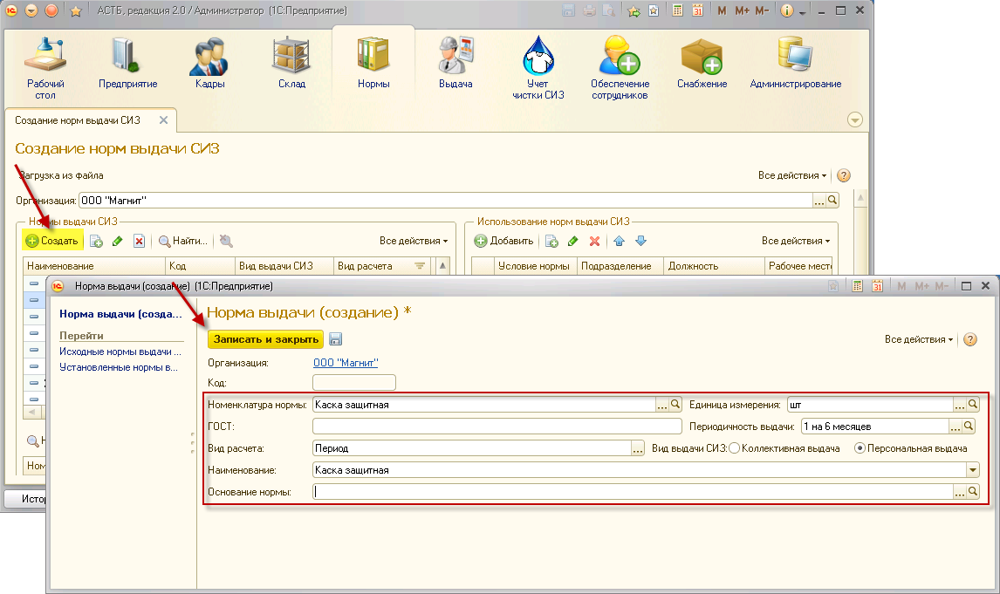
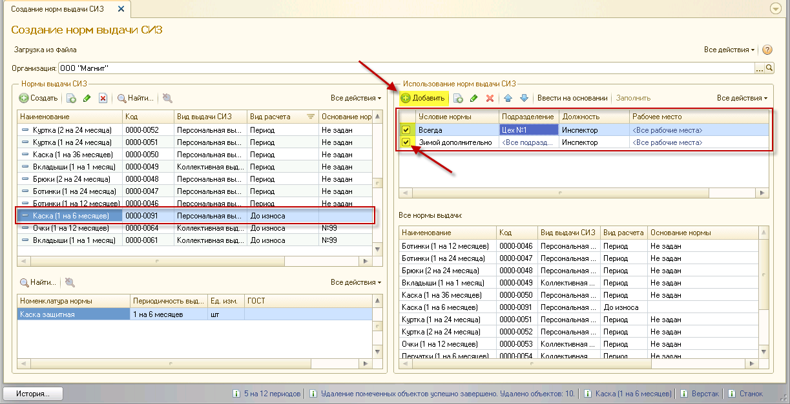
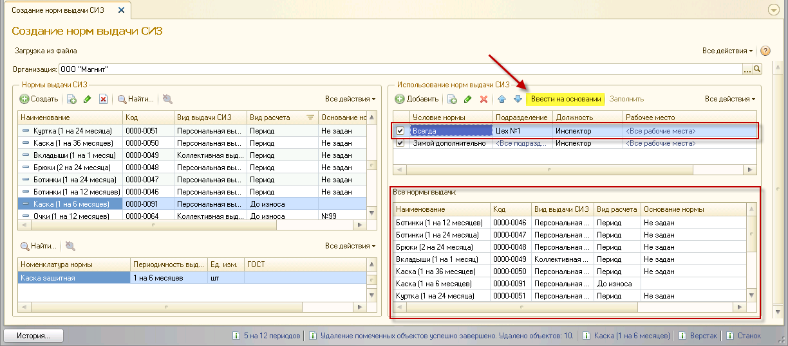
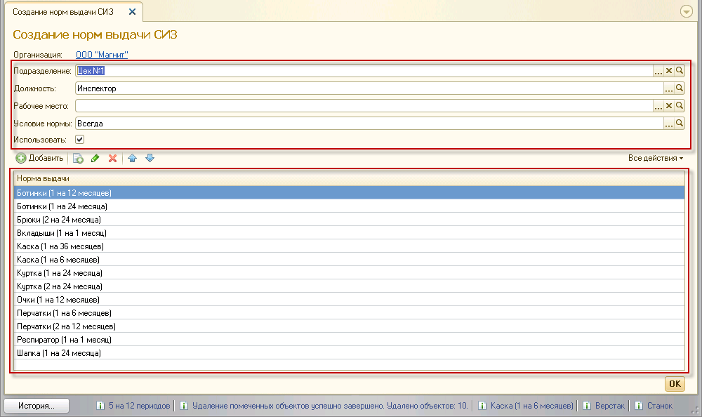
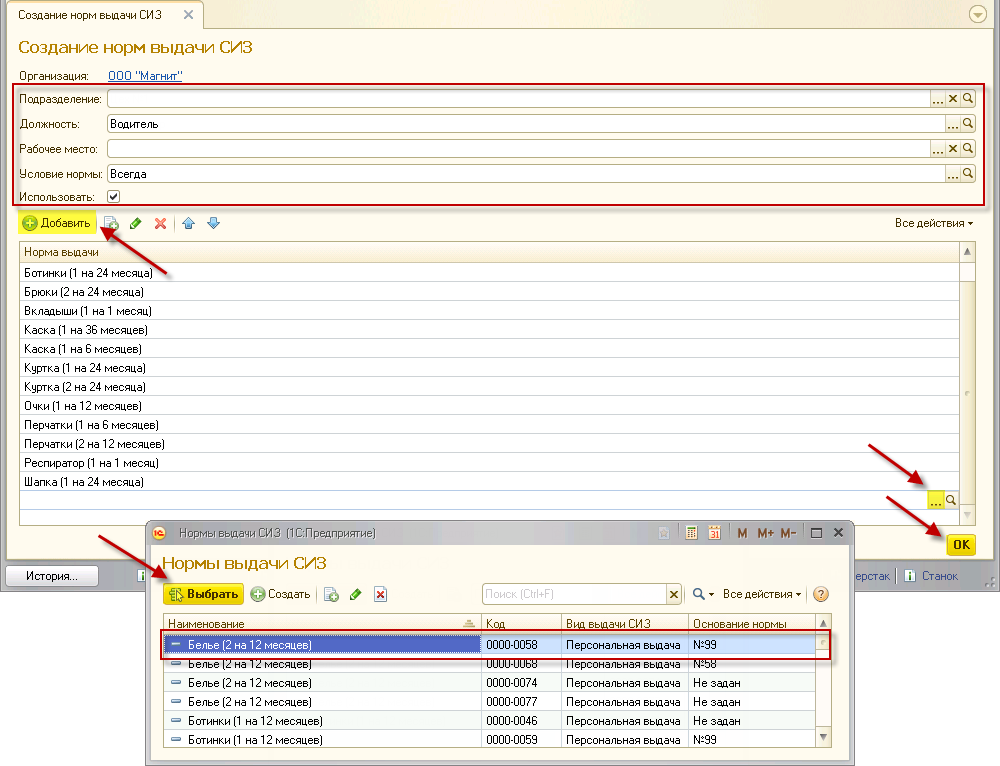
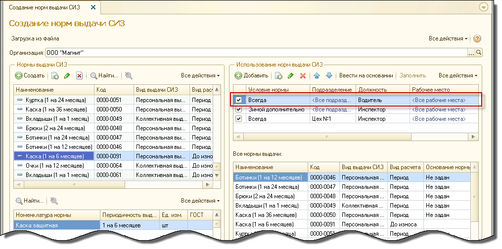
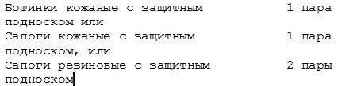
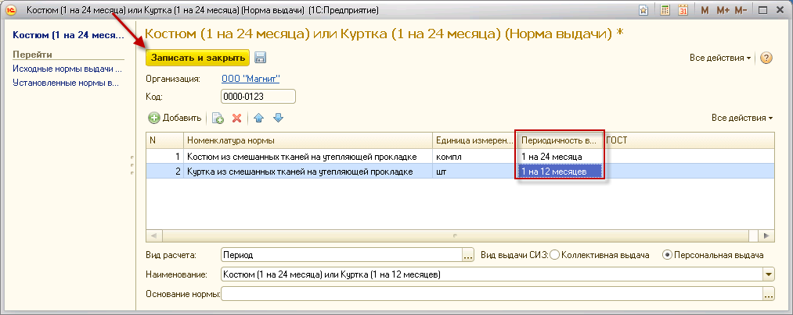
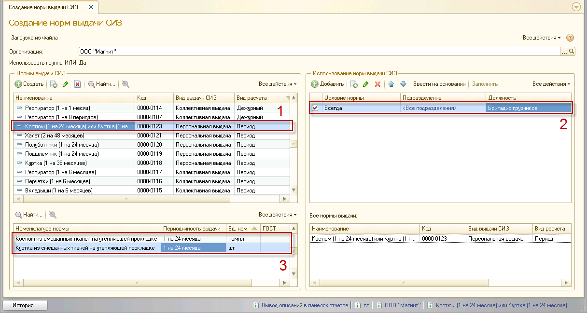

Например, на изображении, представленном выше, в Таблице №1 выбрана норма «Шапка (1 на 12 периодов)» для персональной выдачи. В Таблице №2 отобразилась лишь одна строка, это говорит о том, что данная норма была установлена только для должности «Начальник отдела» подразделения «Цех №1» с условием выдачи «Всегда». Состав нормы отображается в Таблице №3, таким образом, можно узнать, что номенклатура для нормы из Таблицы №1 – «Шапка трикотажная» – выдается с единицой измерения «штука» 1 раз на 12 месяцев. В Таблице №4 выведены все нормы, созданные для подразделения, должности или рабочего места, выделенного в Таблице №2. В данном случае в таблицу выведены все нормы для должности «Начальник отдела» подразделения «Цех №1» с учетом условия «Всегда».
Чтобы создать новый пункт в нормах выдачи СИЗ, нажмите кнопку «Создать». Затем в открывшемся окне заполните следующие поля:
Чтобы создать новый пункт в нормах выдачи СИЗ, нажмите кнопку «Создать». Затем в открывшемся окне заполните следующие поля:
1. Номенклатура нормы – введите наименование номенклатуры нормы.
2. Единица измерения – выберите из списка: «комплект», «пара», «штука».
3. ГОСТ – номер ГОСТ.
4. Периодичность выдачи – значение из справочника «Периодичность выдачи СИЗ», показывающее количество выдаваемых СИЗ на заданный временной период.
· До износа – использование какого-либо СИЗ до потери его защитных свойств. В ПК АСТБ 2.0 возможно проставление приблизительной периодичности выдачи вместе с данным сроком носки. В таком случае появится возможность списания СИЗ ранее заданного периода. Таким образом, если одна номенклатура была выдана на год, но износилась раньше, ее можно будет списать и выдать сотруднику новую номенклатуру по данной норме.
· Период – выдача определенного количества СИЗ на заданный период времени.
· Дежурный – выдача одного или нескольких СИЗ на группу сотрудников или подразделение. Выданные по данному виду расчета средства защиты будут находиться на предприятии в качестве резерва для групп посетителей (практиканты, студенты, делегации и т.п.) или храниться для отдельных видов работ и использоваться сотрудниками, когда это необходимо.
· Коллективная выдача – выдача СИЗ группе сотрудников или ее представителю (МОЛ) по ранее сформированной потребности (по установленным нормам выдачи СИЗ). Коллективной выдачей чаще всего пользуются при распределении СИЗ с маленькой периодичностью выдачи, например, 1 шт. на 1 месяц. Результат выдачи заносится в электронную личную карточку сотрудника;
· Персональная выдача – выдача СИЗ конкретному сотруднику по ранее сформированной потребности (по установленным нормам выдачи СИЗ). Результат выдачи заносится в электронную личную карточку сотрудника.
2. Наименование – введите название для создаваемой нормы.
3. Основание нормы – есть возможность ввести основание для создаваемой нормы, например, пункты загруженных ТОН или номер приказа.
Чтобы сохранить введенные данные, нажмите кнопку «Записать и закрыть».

Затем нужно обозначить подразделения, должности и рабочие места для созданной нормы с указанием условий нормы выдачи. Для этого нажатием выделите созданную норму в Таблице №1, а затем нажмите кнопку «Добавить» над Таблицей №2. В таблице появится новая строка с пустыми полями для заполнения:
1. Условие нормы – значение выбирается из созданного ранее справочника «Условия норм выдачи». Поле является обязательным для заполнения.
Примечание: в ПК АСТБ 2.0 не предусмотрено введение одинаковых норм для одного и того же подразделения и должности, но под разными условиями (например, «Всегда» и «Зимой дополнительно»).
2. Подразделение – уточнение поля «Должность», т.е. при выбранном подразделении, создаваемая норма будет действовать только для должности в заданном подразделении. Норма не будет установлена для той же должности, прикрепленной к другому подразделению.
3. Должность – должность, для которой создается норма. Поле является обязательным для заполнения.
4. Рабочее место – уточнение ранее введенных полей. Норма будет задана для рабочего места только тех должности и подразделения, которые были указаны ранее.

Примечание: для того, чтобы применить норму, проставьте флажок напротив нужной строки в Таблице №2.
Также существует возможность создать норму для другой профессии на основании строки из Таблицы №2. Для этого выделите курсором нужную строку и нажмите кнопку «Ввести на основании».

Появится окно «Создание норм выдачи СИЗ» с заполненными полями условия, подразделения, должности и рабочего места из Таблицы №2, а также список соответствующих данным полям норм (они же указаны в Таблице №3). На примере видно, что в Таблице №2 введено подразделение «Цех №1», должность «Инспектор», а напротив строки стоит галочка, указывающая на использование нормы. Также видно, что список норм из Таблицы №3 соответствует списку норм в открывшемся окне.

В новом окне можно изменить значения полей «Подразделение», «Должность», «Рабочее место» и «Условие нормы» и отредактировать список норм.

Чтобы добавить новую норму для заданных значений, нажмите «Добавить», появится пустая строка для ввода данных. Нажмите <...> и выберите нужную норму. После окончания редактирования нажмите «ОК».
Созданная норма появится в Таблице №2.

Группы «ИЛИ»
Нормы организации формируются на основании государственных типовых отраслевых норм (ТОН), которые, в свою очередь, могут содержать несколько альтернативных номенклатур, положенных сотрудникам в соответствии с их профессией и условиями труда. Для примера ниже представлены выписки из 906 ТОН (химия):
Пример 1.

Пример 2.
Текст примера 1 подразумевает, что сотруднику, работающему по некоторой профессии полагается выдать «Ботинки кожаные» (1 пару на 1 год) ИЛИ «Сапоги кожаные» (1 пару на 1 год) ИЛИ «Сапоги резиновые» (2 пары на 1 год). Пример 2 устанавливает, что работнику полагается выдать «Наушники противошумные» на неопределенный срок (пока наушники не потеряют свои защитные свойства) ИЛИ «Вкладыши противошумные» с тем же сроком носки.
Представленные выше нормы могут быть введены в ПК АСТБ 2.0 в виде элементов группы «ИЛИ». Это означает, что норма для определенной должности может содержать несколько взаимозаменяемых номенклатур, например, «Ботинки кожаные» (1 пару на 1 год) ИЛИ «Сапоги кожаные» (1 пару на 1 год) ИЛИ «Сапоги резиновые» (2 пары на 1 год), полностью отображая состав ТОН.
Примечание: создание норм с группой «ИЛИ» возможно только при установке определенного алгоритма формирования потребности. Описание алгоритмов формирования потребности и инструкцию по их установке, можно найти в следующей главе (глава 3.4 Алгоритмы формирования потребности).
После выбора алгоритма необходимо зайти в раздел «Нормы», сервис «Создание норм выдачи СИЗ». В открывшемся окне следует выбрать организацию и нажать кнопку «Создать». В окне «Норма выдачи (создание)» появится возможность ввода нескольких номенклатур нормы. Для этого нажмите кнопку «Добавить» введите наименования взаимозаменяемых номенклатур нормы, единицы измерения и периодичность выдачи. После заполнения табличной части введите нужный вид расчета («Период», «До износа» или «Дежурный»), определите вид выдачи СИЗ («Коллективная выдача» или «Персональная выдача») и введите наименование из списка.
Примечание: поле «Название» будет включать слово «ИЛИ», показатель использования группы элементов для созданной нормы. На примере ниже – Костюм (1 на 24 месяца) или куртка (1 на 24 месяца).
Примечание: при использовании групп «ИЛИ» нужно учитывать периодичность выдачи. В ПК АСТБ 2.0 существует возможность присваивания одной норме нескольких номенклатур с разной периодичностью выдачи. Однако подобная норма будет работать только при выборе алгоритма, использующего единую периодичность групп «ИЛИ».
Если был выбран иной алгоритм, при проставлении периодичности выдачи у элементов группы нормы программа позволит указать только одинаковые значения. На примере выше – 1 на 24 месяца.
Если на этапе выбора алгоритма было решено использовать единую периодичность для групп «ИЛИ», то при создании нормы появится возможность указывать разные значения периодичности выдачи для элементов группы «ИЛИ».

Чтобы сохранить указанные данные, нажмите кнопку «Записать и закрыть».
Затем, выбрав созданную норму нажатием мыши в окне №1, следует привязать данную норму к нужной должности, подразделению и рабочему месту (если в организации ведется учет рабочих мест), указать условие нормы и проставить галочку применения нормы в окне №2. Тем временем в окне №3 будет отображаться состав созданной нормы, т.е. все элементы группы «ИЛИ» с указанием периодичности выдачи и единиц измерения.

Копирование норм выдачи СИЗ
Окно «Копирование норм выдачи СИЗ» состоит из четырех виртуальных таблиц:
1. Таблица №1 – Исходные нормы – в данной таблице отображается информация о подразделениях и должностях, на которые заданы исходные нормы выдачи СИЗ.
2. Таблица №2 – Целевые нормы – отображаются подразделения и должности по штатному расписанию, с указанием количества занятых рабочих мест.
3. Таблица №3 – отображает нормы по подразделению и должности, выделенных в таблице №1, а именно условие нормы, норму выдачи, вид выдачи, основание и номенклатуру нормы.
4. Таблица №4 – отображает нормы по подразделению и должности, выделенных в таблице №2, а именно условие нормы, норму выдачи, вид выдачи, основание и номенклатуру нормы.
Для начала работы необходимо выбрать организацию.

Для того, чтобы скопировать нормы одной профессии на другую, необходимо найти в первой таблице подразделение и должность с действующими нормами, а во второй таблице подразделение и должность с нормами, которые подлежат замене или отсутствуют.
Рассмотрим на примере. В первой таблице выбран "Тестировщик", в таблице №3 отображаются нормы, привязанные к этой профессии. Во второй таблице выбран "Ведущий тестировщик". Так как нормы на ведущего тестировщика не задавались, таблица №4 пуста. Для того, чтобы скопировать нормы тестировщика ведущему, нажмите кнопку "Заменить нормы" в таблице №4. Появится сообщение "Будет выполнена полная замена текущих целевых норм на исходные. Выполнить?". Если вы по ошибке нажали на кнопку "Заменить нормы", на этом этапе у вас есть возможность отменить замену, нажав "Нет". Если действительно нужно заменить нормы, нажмите "Да".

После этого будет выполнена полная замена норм ведущего тестировщика на нормы тестировщика.

После копирования или создания норм необходимо создать "Приказ по предприятию" для вступления новых норм в силу.
Также существует возможность сравнить нормы двух профессий в подразделениях. Для этого необходимо выбрать в таблице №1 и таблице №2 подразделения и должности, чьи нормы вы хотите сравнить. После выбора нажмите кнопку "Сравнить нормы" в таблице №4.

Откроется окно с отчетом, полученным в ходе сравнения норм.

На скриншоте видно, каким образом отображаются совпадающие и несовпадающие нормы у выбранных профессий в подразделениях.